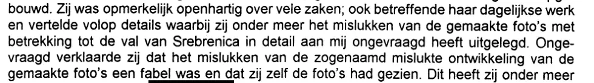

Prueba · Denuncia
«Era notablemente franca sobre muchos asuntos; también en lo referente a su trabajo diario, y daba detalles en abundancia, entre otras cosas me explicó con detalle, sin que yo se lo pidiera, el fracaso de las fotos tomadas en relación con la caída de Srebrenica. Sin que nadie se lo preguntara, declaró que el fracaso del revelado supuestamente fallido de las fotos tomadas era una fábula y que ella misma había visto las fotos». Página 1, del párrafo que figura bajo el intertítulo «Kennismaking met mevrouw Barbara Overduin» (primer contacto con la señora Barbara Overduin). La doble formulación «het mislukken van de zogenaamd mislukte ontwikkeling» (el fracaso del revelado supuestamente fallido) refleja su versión: según ella, el revelado de las fotos no había fracasado. Traducido del neerlandés; el texto original figura a continuación.
“Zij was opmerkelijk openhartig over vele zaken; ook betreffende haar dagelijkse werk en vertelde volop details waarbij zij onder meer het mislukken van de gemaakte foto’s met betrekking tot de val van Srebrenica in detail aan mij ongevraagd heeft uitgelegd. Ongevraagd verklaarde zij dat het mislukken van de zogenaamd mislukte ontwikkeling van de gemaakte foto’s een fabel was en dat zij zelf de foto’s had gezien.” La denuncia escribe el nombre «Barbara Overduin», como la primera edición del libro; las ediciones posteriores anonimizan su nombre y el ensayo utiliza «Overduyn». Las palabras divididas entre dos líneas en el original, como «Onge-» y «vraagd» por «Ongevraagd», se han unido aquí.

En julio de 1999, los investigadores de la policía de La Haya se habían negado a registrar la denuncia de Giltay. Solo después de que el jefe de distrito N. Laagland declarara fundada en dos puntos la queja de Giltay y le presentara sus disculpas en marzo de 2000, se registró por fin, el 12 de junio de 2000, la denuncia por difamación y calumnia. Con ella, Giltay dejó constancia de lo que la empleada del servicio de inteligencia militar había contado sobre el material fotográfico: que, según ella, el revelado no había fracasado y que ella misma había visto las fotos. Según la denuncia, esto último se lo dijo, entre otros, a un colega de Casema, la empresa de cable.
Esta página es una ficha de prueba del libro El general del encubrimiento de Edwin Giltay y del sitio web que lo acompaña.